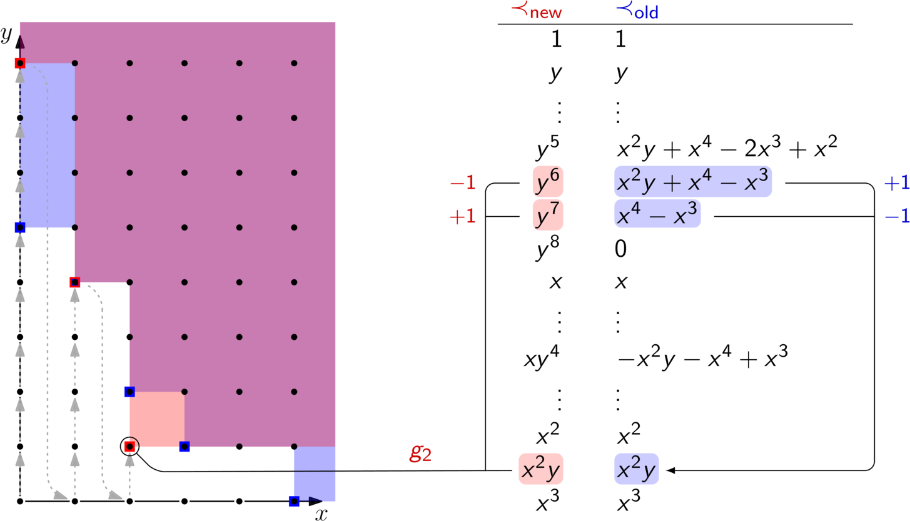
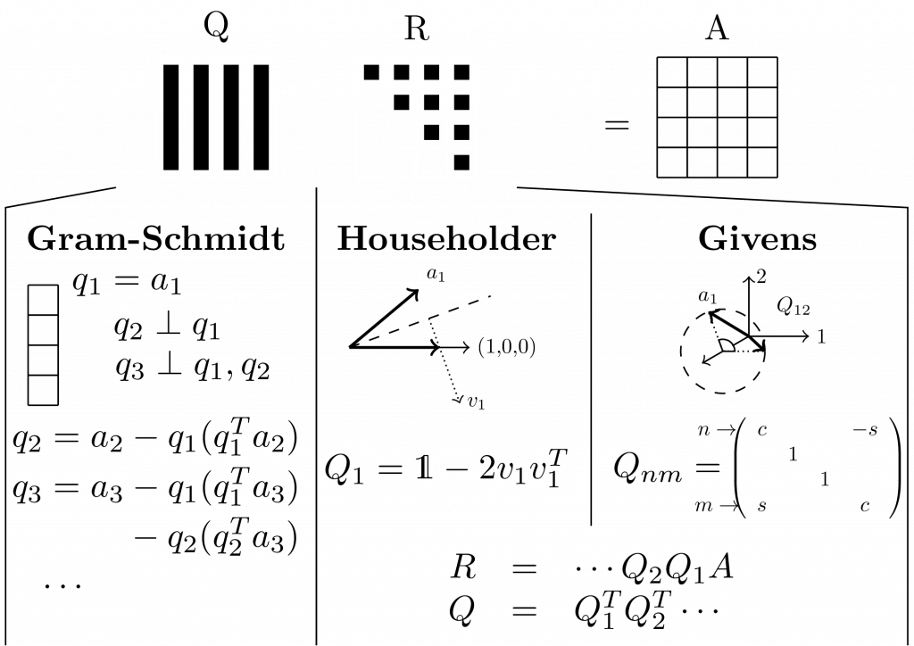
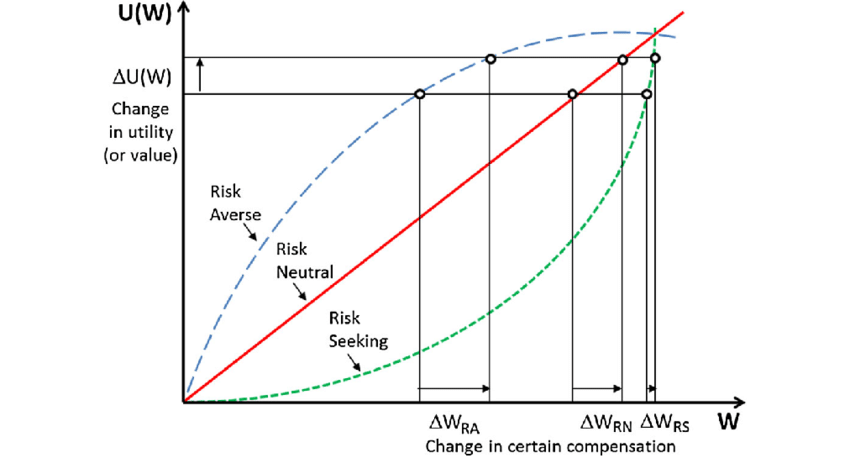

Will contain my active and completed research projects and papers.
Contains the full list of completed projects.
Contains miscellaneous projects that are tangentially related to my interests, or projects that are off-shoots.
Developed a naive algorithm to compress a matrix into sparse COO format, a naive algorithm to compress a matrix into sparse CSR format, and a naive algorithm to compress a matrix into sparse CSC format. Alongside implementation of classical and modern iterative algorithms from sparse numerical linear algebra.
Jupyter Notebook
A final presentation on Gröbner Bases and Macaulay Matrices in Isabelle/HOL by Alexander Maletzky.
Jupyter Notebook
In MATH 6316 our second project was about deriving and coding our own BLAS QR decomposition algorithms. We utilised both Gram-Schmidt and Householder processes to derive these QR decomposition algorithms.
We coded the resulting algorithms in MATLAB, so that we could utilize them in solving the assigned textbook problems.
To be neat I coded the QR by Gram-Schmidt and QR by Householder algorithms in MATLAB, and the respective textbooks. I imported the MATLAB matrices and vectors into R Markdown, and developed a R markdown webpage.
Developed krylov subspace sparse algorithms, such as, conjugate gradient method, conjugate residual method, conjugate squared method and biconjugate gradient stable method.
In addition I developed the precondition variation of these algorithms.

Final Presentation on the famous Arrow-Pratt Risk Aversion measurement. This topic was closely align to my undergraduate research in Von Neumann-morganstern Portfolio Theory, in fact this presentation covered many of the underlying topics that formed the foundation for VNM Portfolio Theory.
Jupyter NotebookA project where we were tasked with the examination of the historical documents that made up the Declaration of Session using the Tidyverse R package. As present-day data scientists, we were tasked with determination of the reasons of the southern U.S. states session from the Union prior to the Civil War, by examing several of these states declaration of session through the lens of Text analysis, and statistical examination.
Jupyter Notebook